잠의 모양을 먼저 여쭙니다
AI로 만든 이미지자기 전에, 숨부터 고르세요
잠은 애쓸수록 멀어지기도 합니다. 지금은 잘 자려고 하지 않으셔도 됩니다. 숨만 따라가 보세요.
4초 들이쉬고, 6초 내쉬어 보세요
긴장을 푸는 데 도움이 될 수 있는 일반적인 방법이며 치료를 대신하지 않습니다. 어지럽거나 불편하면 멈추세요.
음성으로 듣기 (약 2분)
AI로 만든 음성입니다. 눈을 감고 들으셔도 좋고, 듣다가 졸리면 그대로 주무셔도 됩니다.
수면욕이란
깨어 있는 시간이 길어질수록 잠을 자고 싶은 욕구가 쌓이고, 몸의 시계가 "지금이 잘 시간"이라고 알려 줍니다. 이 두 가지가 맞아떨어질 때 잠이 옵니다.
낮잠이 길거나 늦은 카페인, 밝은 화면, 들쭉날쭉한 기상 시간은 이 균형을 흩뜨릴 수 있습니다. 그래서 잠만 따로 보지 않고 낮의 생활 전체를 함께 봅니다.
잠은 몸따삶잘의 한가운데에 있습니다.
불면의 네 가지 모양
이렇게 여쭙니다

- 잠의 모양
몇 시에 눕고, 잠들기까지 얼마나 걸리고, 몇 번 깨고, 몇 시에 일어나는지 여쭙니다. - 낮의 생활
카페인, 낮잠, 식사 시간, 활동량, 자기 전 화면을 함께 묻습니다. - 몸따삶잘
몸의 온기, 소화, 대소변, 통증, 평소 생활을 잠과 함께 살핍니다. - 기록하고 이어서 묻기
잠이 달라진 점을 남기고 다음 진료에서 이어서 여쭙니다.
정해진 양식은 없습니다. 눕은 시각, 깬 횟수와 시각, 일어난 시각, 아침의 개운함을 일주일만 메모해 오시면 이야기가 훨씬 구체적이 됩니다.
안전을 위해 지키는 원칙
복용 중인 수면제와 신경안정제는 처방한 의사와 상의해 단계적으로 조절해야 합니다. 한의원에서는 먹는 약을 모두 확인한 뒤 진료합니다.
코를 크게 골고 숨이 멎는 것 같을 때, 낮에 참을 수 없이 졸릴 때, 다리가 불편해 움직여야 잠들 수 있을 때, 우울감이 깊거나 극단적인 생각이 들 때는 먼저 의료기관 진료를 받으세요.
변화의 정도와 기간은 사람마다 다릅니다. 진찰 후 가능한 방법과 비용을 안내해 드립니다.
잠과 식욕은 서로 영향을 줍니다
잠이 부족하면 식욕이 커지는 경향이 있는 것으로 알려져 있고, 늦은 식사와 야식은 잠을 흔들 수 있습니다. 그래서 불면과 대사 문제는 함께 오는 경우가 많습니다.
불면·수면 글
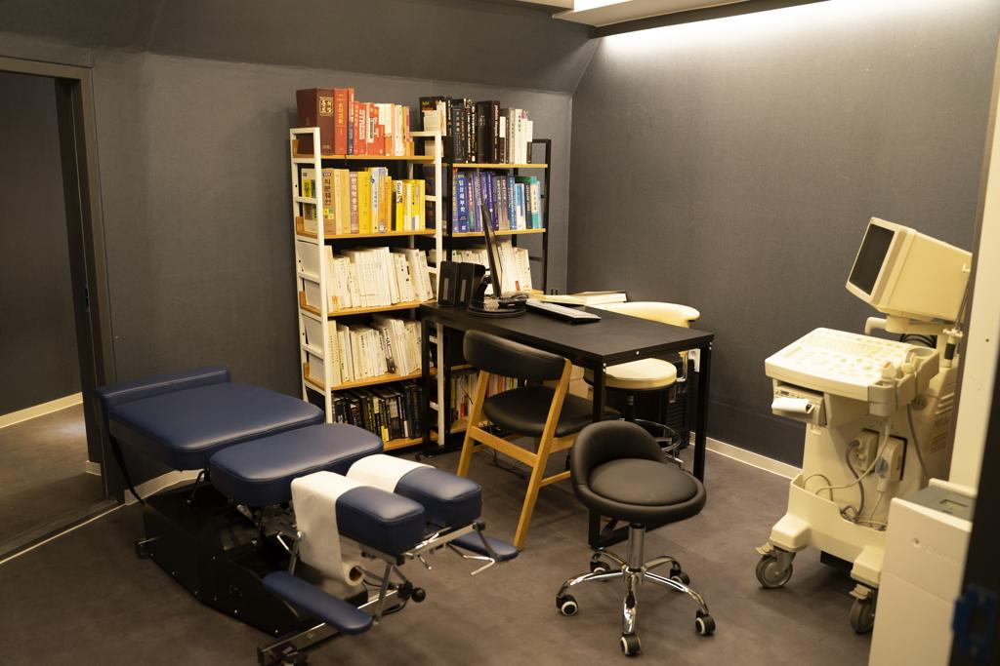
수능이 끝난 뒤 밤낮이 바뀌었을 때 잠 리듬은 어떻게 되돌리나요?
수능 뒤 늦게 자고 늦게 일어나는 날이 이어지면 잠드는 시각이 계속 밀릴 수 있어, 일어나는 시각과 낮의 활동을 먼저 묻고 이 주 정도에 걸쳐 조금씩 당기는 방법을 함께 정리합니다.
수정 2026-11-25
평일엔 회사 근처 원룸, 주말엔 본가에서 지내며 잠이 들쭉날쭉할 때는 어떻게 살피나요?
평일엔 원룸, 주말엔 본가에서 지내 잠이 들쭉날쭉할 때는 두 집의 베개와 잠옷을 비슷하게 맞추고 주말에도 일어나는 시각을 평일과 비슷하게 두며, 일요일 이동은 저녁 늦기 전에 마치는 것부터 해 보시기를 권합니다.
수정 2026-11-24
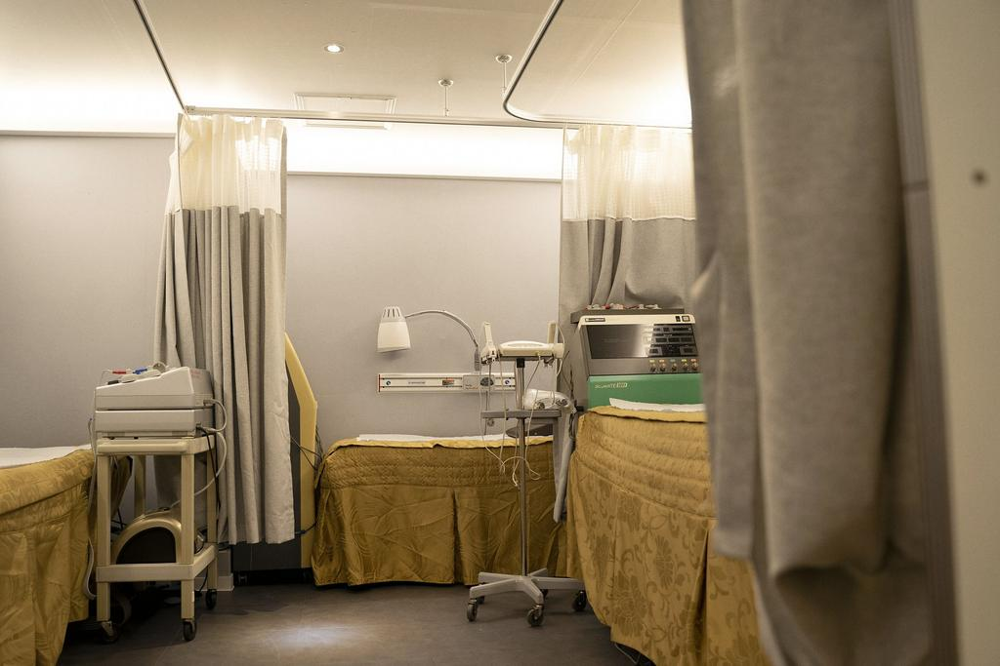
과제와 시험으로 밤샘이 잦은 대학생의 잠 리듬이 무너졌을 때는 어떻게 되돌리나요?
밤샘과 늦잠이 반복되면 잠드는 시간과 일어나는 시간이 계속 밀려 낮에 집중하기 어려워질 수 있어, 최근 2주의 잠 기록과 카페인, 화면 사용을 먼저 묻고 일어나는 시간부터 고정하는 방법을 함께 정리합니다.
수정 2026-11-24
고시원이나 원룸처럼 좁은 방에서 소음과 빛 때문에 잠이 얕을 때는?
고시원이나 원룸에서 소음과 빛 때문에 잠이 얕을 때는 귀마개와 수면 안대, 자기 전 환기, 일정한 잠드는 시각부터 시도하고, 자주 깨 낮이 힘들다면 잠의 모양과 긴장, 생활 리듬을 함께 살핍니다.
수정 2026-11-24
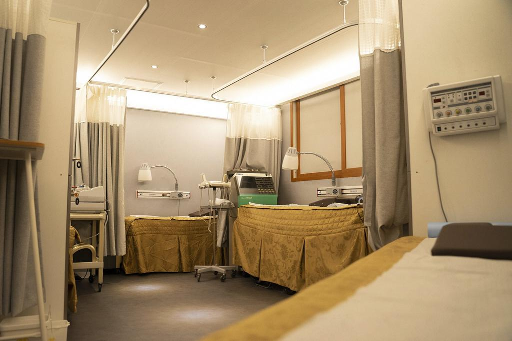
겨울이 되어 바깥 활동이 줄어든 어르신이 밤잠이 짧아지고 새벽에 일찍 깰 때는 어떻게 살피나요?
추운 날씨로 낮 동안 집 안에만 머물면 햇빛과 활동이 줄어 밤잠이 얕아지고 새벽에 일찍 깨기 쉬워, 낮잠과 낮 활동, 잠드는 시간을 먼저 묻고 실내에서도 할 수 있는 하루 리듬을 함께 정리합니다.
수정 2026-11-24
시험 전날 저녁은 어떻게 보내면 컨디션을 지키는 데 도움이 되나요?
시험 전날은 새로운 것을 하기보다 평소 리듬을 지키는 것이 중요해, 익숙한 저녁 식사, 준비물 미리 챙기기, 정리 노트만 훑어보기, 평소 시각에 눕기를 미리 정해 두시기를 권합니다.
수정 2026-11-24
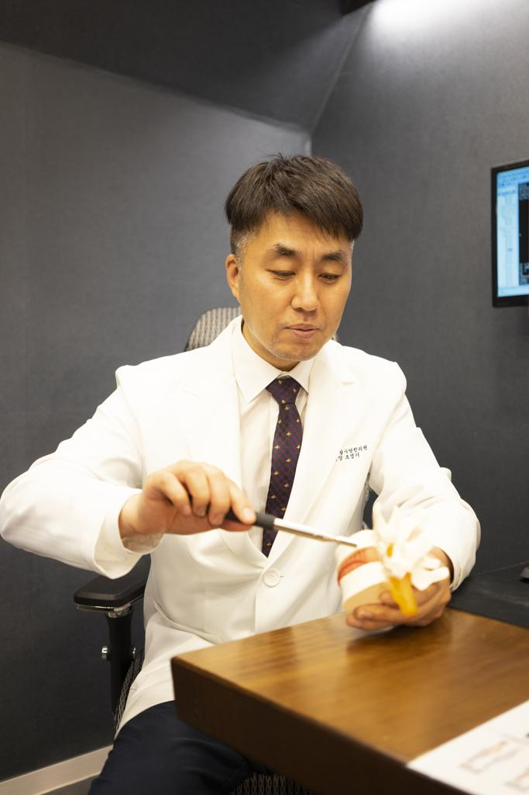
커피와 에너지 음료로 버티다 밤에 잠이 안 올 때는 어떻게 하나요?
커피와 에너지 음료로 버티다 밤에 잠이 안 온다면 카페인은 오후 2시 전까지만, 하루 양을 정해 며칠에 걸쳐 줄이는 것부터 시작하고, 줄여도 피로나 두근거림이 심하면 잠의 질과 긴장을 함께 살핍니다.
수정 2026-11-24
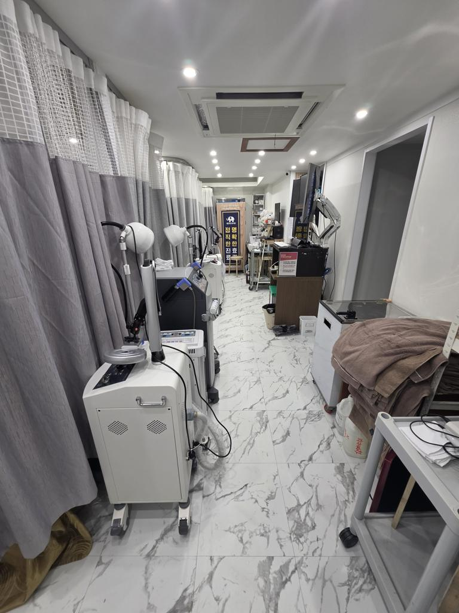
결산·마감처럼 야근이 몰리는 주가 다가올 때 잠은 어떻게 미리 준비하나요?
야근이 몰리는 주를 앞두고는 아침 기상 시각을 크게 흔들지 않고 카페인은 오후 이른 시간까지만 마시며, 귀가 뒤 잠들기까지의 순서를 세 단계로 짧게 정해 두는 것부터 준비하시기를 권합니다.
수정 2026-11-24
대학교 기말고사가 끝난 뒤 밤낮이 바뀐 생활은 어떻게 되돌리나요?
기말고사 뒤 밤낮이 바뀐 생활은 한 번에 돌리기보다 일어나는 시각을 하루 30분에서 1시간씩 앞당기고 일어나자마자 햇빛을 보는 것부터 며칠에 걸쳐 되돌리시기를 권합니다.
수정 2026-11-24
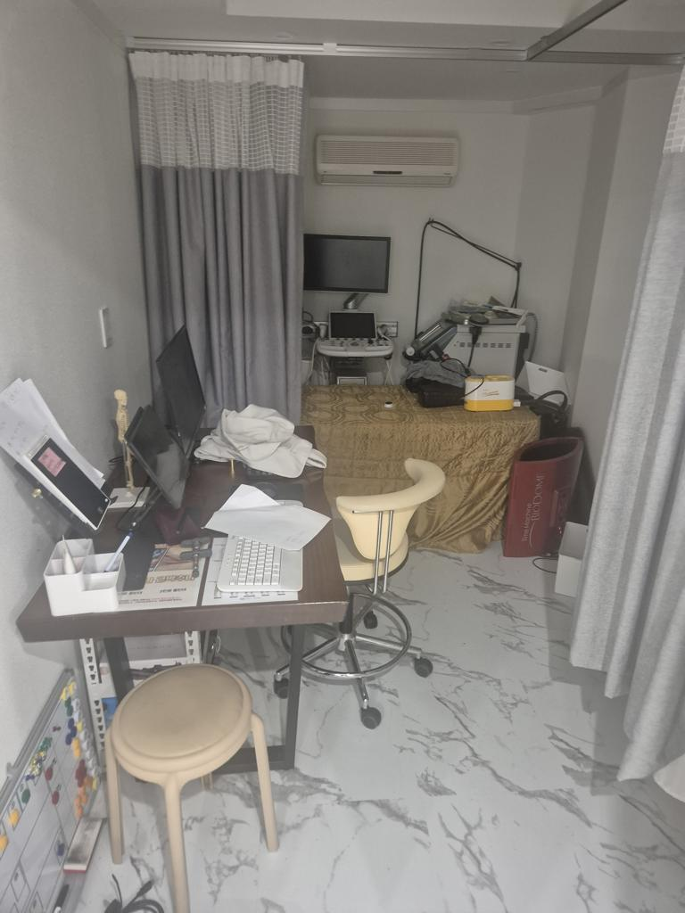
걱정이 많아서 잠이 안 올 때는 어떻게 살피나요?
누우면 걱정이 꼬리를 물어 잠이 안 온다면 걱정이 시작되는 시각과 내용, 낮의 긴장과 몸의 신호를 먼저 여쭙니다. 걱정을 적어 두는 방법 같은 생활 요령을 함께 정하고, 우울감이 깊거나 일상이 어려우면 정신건강 진료를 먼저 권합니다.
수정 2026-11-24
위층 소리 때문에 밤마다 잠을 설칠 때는 무엇을 살펴보나요?
층간소음은 소리 자체보다 언제 또 날지 몰라 긴장하는 마음이 잠을 방해하는 경우가 많습니다. 소리의 대비를 줄이는 방법과 긴장을 푸는 저녁 습관부터 살피고, 소리 기록과 상의 경로도 함께 안내합니다.
수정 2026-11-24
피곤한 것과 졸린 것은 어떻게 구분해서 말하면 좋을까요?
졸림은 눈이 감기고 잠이 쏟아지는 느낌이고 피곤함은 몸이 무겁고 기운이 없는 느낌이라, 둘을 나눠 말씀해 주시면 잠과 생활 중 어느 쪽을 먼저 살필지 정하기 쉽습니다.
수정 2026-11-24
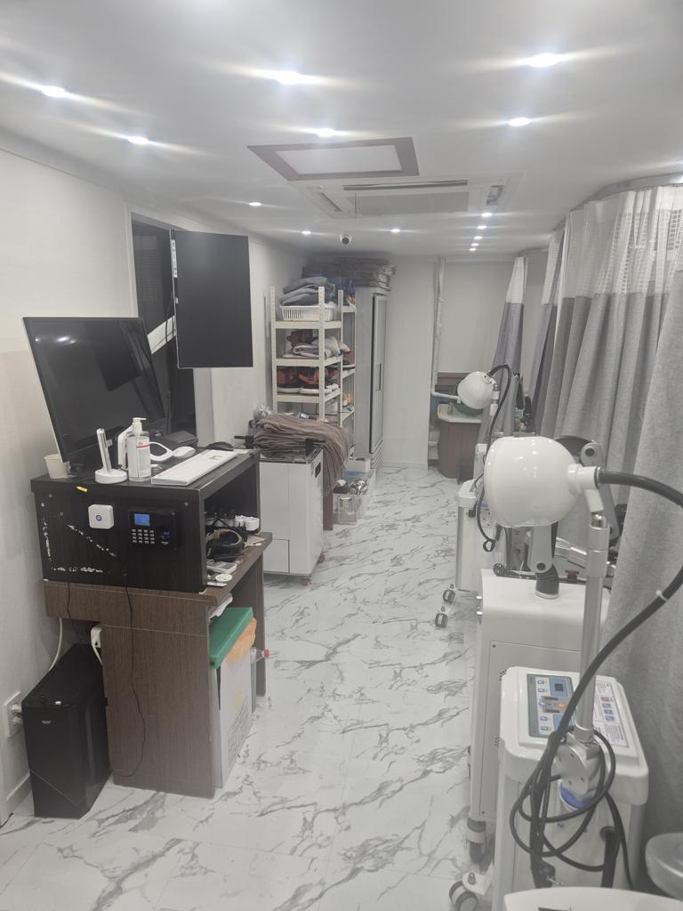
청소년이 새벽에 자고 아침에 못 일어나는 것은 어떻게 살피나요?
청소년이 밤늦게야 잠들고 아침에 일어나지 못하는 것은 사춘기 수면 리듬의 변화와 화면 사용, 학업 부담이 겹친 경우가 많습니다. 수면 시간과 화면 시간, 낮 활동을 먼저 여쭙고 혼내기보다 리듬을 조금씩 옮기며, 우울감이 깊으면 전문 진료를 먼저 권합니다.
수정 2026-11-24
하루 종일 말하는 교사가 저녁에 기운이 빠지고 잠이 얕을 때는 어떻게 살피나요?
수업으로 목소리와 긴장을 하루 종일 쓰면 저녁에 몸은 지쳐도 머리는 깨어 있어 잠이 얕아질 수 있어, 퇴근 뒤 쉬는 방식과 저녁 리듬, 목·어깨 긴장을 먼저 함께 살핍니다.
수정 2026-11-24
식당을 늦게 마감하는 자영업자가 집에 와도 잠들기 어려울 때는 어떻게 하나요?
늦은 마감 뒤에는 정산과 다음 날 준비 생각으로 머리가 깨어 있어 잠들기 어려울 수 있어, 마감 뒤 귀가까지의 흐름을 하루를 닫는 순서로 바꾸는 것부터 함께 살핍니다.
수정 2026-11-24
재택근무를 시작한 뒤 출퇴근 경계가 사라져 잠 리듬이 흐트러질 때는 어떻게 하나요?
재택근무는 하루의 시작과 끝이 흐려져 기상과 취침 시각이 밀리기 쉽습니다. 일과 쉬는 공간을 나누고 일어나는 시각을 일정하게 두는 것부터 정리하고, 앉아 있는 자세와 낮 활동도 함께 살핍니다.
수정 2026-11-24
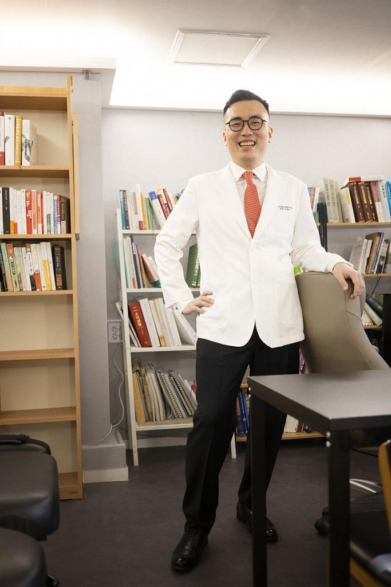
스마트폰 알림 소리나 진동에 밤마다 깰 때는 어떻게 하나요?
밤사이 알림 소리와 불빛은 얕은 잠을 쉽게 깨우고 화면을 다시 확인하게 만들어 잠을 끊어 놓습니다. 방해금지 설정과 충전 위치를 바꾸는 것부터 정리하고, 연락에 대한 긴장도 함께 살핍니다.
수정 2026-11-24
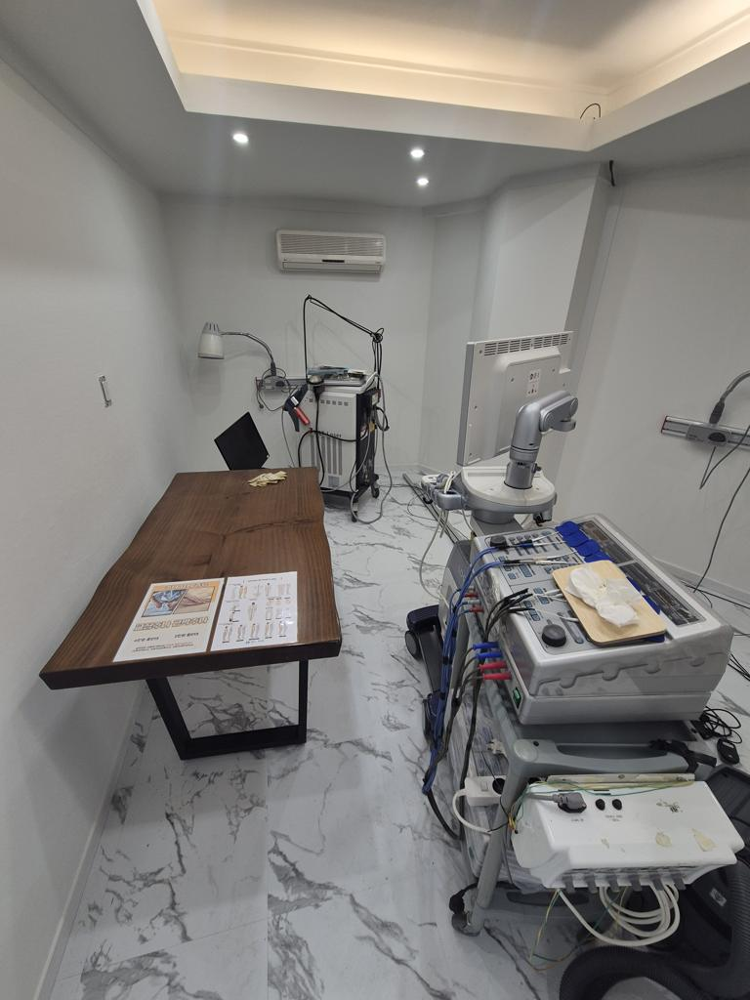
야간 근무를 마친 간호사가 낮에 자야 할 때 침실은 어떻게 준비하나요?
야간 근무 뒤 낮잠은 아침 빛과 생활 소음 때문에 자주 끊기기 쉬워, 퇴근길 빛을 줄이고 침실을 낮에도 어둡고 조용하게 만드는 준비부터 함께 정리합니다.
수정 2026-11-24
새 학기가 시작된 뒤 아이가 밤에 잠들기 어려워하면 어떻게 살피나요?
새 학기에는 환경과 시간표가 바뀌어 아이의 취침 시각이 흔들리기 쉽습니다. 일정한 기상 시각과 잠자리 의식을 정하고 낮의 긴장을 살피는 것부터 시작하며, 보호자와 함께 아이 눈높이로 이야기합니다.
수정 2026-11-24
침대나 매트리스를 새로 바꾼 뒤 한동안 잠이 낯설 때는 어떻게 하나요?
새 침대나 매트리스는 몸이 익숙해지는 데 시간이 걸려 처음 며칠은 오히려 잠이 얕아질 수 있습니다. 한두 주 적응 기간을 두고 불편한 부위와 자세, 베개 높이를 함께 살핍니다.
수정 2026-11-24
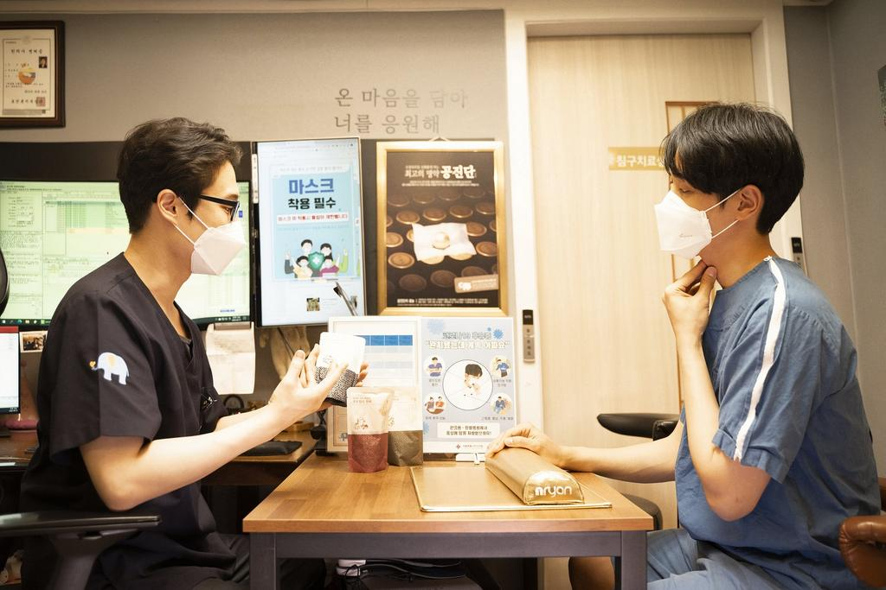
이사한 직후 낯선 집에서 잠이 오지 않을 때는 어떻게 하나요?
이사 직후에는 냄새와 소리, 불빛, 침대 위치가 달라져 잠이 얕아지는 일이 흔합니다. 새 방의 환경을 익숙하게 맞추고 기상 시각을 지키는 것부터 살피고, 몇 주 넘게 이어지면 잠의 모양을 함께 봅니다.
수정 2026-11-24
명상 앱이나 수면 음악을 써 볼 때는 무엇을 알아 두면 좋을까요?
명상 앱과 수면 음악은 잠자리의 긴장을 푸는 도구가 될 수 있지만, 화면과 알림이 오히려 잠을 깨울 수 있습니다. 화면은 끄고 소리만 쓰는 방법부터 안내하고, 소리에 기대는 정도도 함께 살핍니다.
수정 2026-11-24
먼 거리를 출퇴근하느라 새벽에 일어나는 날이 이어질 때는 잠을 어떻게 살피나요?
장거리 출퇴근은 수면 시간을 줄이고 기상 시각을 앞당겨 만성 피로로 이어지기 쉽습니다. 취침 시각을 조금씩 당기고 이동 시간을 쉬는 시간으로 쓰는 방법부터 살피고, 주말 리듬도 함께 점검합니다.
수정 2026-11-24
이직이나 퇴사를 앞두고 앞날 걱정으로 잠이 얕아질 때는 어떻게 하나요?
이직이나 퇴사를 앞둔 시기에는 해결되지 않은 걱정이 밤에 떠올라 잠이 얕아지기 쉽습니다. 걱정을 낮에 글로 옮겨 두고 기상 시각을 지키는 것부터 정리하고, 몸의 긴장과 식사 변화도 함께 살핍니다.
수정 2026-11-24
출장이나 여행지 숙소에서 낯선 침대 때문에 잠을 설칠 때는 어떻게 하나요?
낯선 숙소에서는 몸이 주변을 경계하느라 첫날 밤 잠이 얕아지는 일이 흔합니다. 익숙한 물건과 일정한 기상 시각으로 리듬을 지키는 방법을 안내하고, 돌아온 뒤에도 흐트러짐이 이어지는지 살핍니다.
수정 2026-11-24
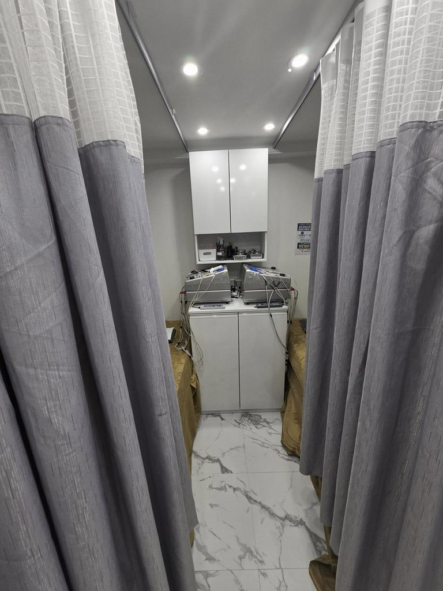
저녁 식사와 술은 잠에 어떤 영향을 주나요?
잠들기 직전의 과식과 야식, 술은 잠이 얕아지고 새벽에 깨는 것과 관련될 수 있습니다. 식사 시각과 양, 술의 양을 먼저 여쭙고 잠들기 몇 시간 전에 가볍게 마무리하는 방법을 정하며, 식욕과 잠의 리듬을 함께 살핍니다.
수정 2026-11-24
마감을 앞둔 개발자·디자이너가 커피에 기대며 밤을 새울 때 잠은 어떻게 정리하나요?
마감 기간의 늦은 카페인과 밤샘은 마감 뒤에도 잠드는 시각을 늦출 수 있어, 커피를 마시는 시각과 양, 화면을 끄는 시각, 마감 뒤 회복 계획부터 함께 정리합니다.
수정 2026-11-24
연말 모임 뒤에 잠이 얕아질 때는 어떻게 하나요?
연말 모임으로 늦게 먹고 마신 날은 잠이 얕아지기 쉬워, 다음 날 일어나는 시각을 지키고 모임이 몰린 주의 리듬을 먼저 정리해 보도록 안내합니다.
수정 2026-11-24
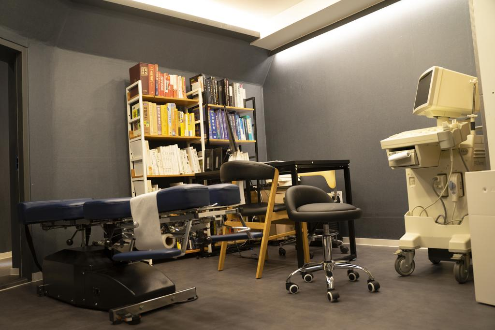
동지 무렵 한파에 아침 기상이 힘들 때는 어떻게 리듬을 잡나요?
해가 짧고 추운 동지 무렵에는 아침에 일어나기 어려운 것이 흔해, 기상 시각을 크게 흔들지 않고 밝은 빛과 따뜻한 환경을 먼저 마련하며 무기력이 오래가면 확인을 권합니다.
수정 2026-11-24
겨울 아침에 일어나기 유난히 힘들 때는 무엇을 살피나요?
해가 늦게 뜨고 추운 겨울 아침에 일어나기 힘든 것은 흔하지만, 잠든 시각과 잠의 질, 아침 빛과 실내 온도를 함께 살피면 이유를 가늠하기 쉬워집니다.
수정 2026-11-24
새벽에 자꾸 잠이 깨는 이유는 무엇이고, 어떤 점을 살펴보나요?
새벽에 깨는 이유는 수면 후반의 얕아진 잠, 카페인과 술, 밤 소변, 통증, 열감, 속 불편, 걱정, 수면무호흡 등 여러 가지입니다. 몇 시에 무엇 때문에 깨는지와 다시 잠드는지를 먼저 여쭙고 생활 전체와 함께 살핍니다.
수정 2026-11-25
꿈이 많고 자도 개운하지 않을 때는 어떤 점을 살펴보나요?
꿈이 많고 자도 개운하지 않을 때는 꿈 자체보다 실제 수면 시간과 중간에 깨는 횟수, 코골이, 늦은 식사와 음주를 먼저 묻고 소화와 긴장, 스트레스까지 함께 살핍니다.
수정 2026-11-25
침대에 오래 누워 있으면 잠이 더 깊어질까요?
잠을 보충하려고 침대에 오래 누워 있으면 오히려 잠이 얕아지고 뒤척임이 늘 수 있어, 실제로 자는 시간에 맞춰 누워 있는 시간을 정리해 보는 방법을 안내합니다.
수정 2026-11-24
코를 크게 골고 자다가 숨이 멎는 것 같을 때는 어떻게 하나요?
큰 코골이와 자다가 숨이 멎는 듯한 모습, 아침 두통과 낮의 심한 졸음이 함께 있다면 수면무호흡일 수 있어 수면 검사를 먼저 권합니다. 한의원에서는 체중, 술, 코막힘, 자세 같은 생활 요인을 함께 살피며 검사 결과를 대신하지 않습니다.
수정 2026-11-25
잠들기까지 한 시간 넘게 걸릴 때 한의원에서는 무엇을 먼저 묻나요?
잠들기까지 오래 걸릴 때는 눕는 시각과 낮의 카페인, 자기 전 화면, 걱정과 몸의 긴장을 먼저 묻고 생활 리듬을 함께 정리하며 우울감이나 수면무호흡이 의심되면 해당 진료를 먼저 권합니다.
수정 2026-11-25
작은 소리에도 자주 깨는 분은 어떤 점을 살펴보나요?
작은 소리나 빛에 예민해 자주 깨는 잠은 침실 환경과 낮의 긴장, 귀 불편, 수면 습관을 함께 점검하며, 한쪽 귀가 갑자기 잘 안 들리거나 귀 통증이 있으면 이비인후과 진료를 먼저 권합니다.
수정 2026-11-24
자다가 소변 때문에 깨면 잠과 어떤 관련이 있고, 무엇을 살펴보나요?
밤에 소변 때문에 자주 깬다면 저녁 수분과 카페인·술, 수면무호흡, 혈당, 전립선·방광, 복용 약, 얕은 잠 가운데 무엇이 겹쳤는지부터 봅니다. 횟수와 소변량, 갈증을 먼저 여쭙고 필요하면 병원 검사를 권합니다.
수정 2026-11-25
잠이 잘 오지 않을 때 한의원에서는 무엇을 먼저 살피나요?
잠이 잘 오지 않을 때는 잠드는 시간, 자주 깨는 정도, 새벽 각성, 낮의 컨디션을 먼저 묻고 소화·몸의 온기·긴장 같은 생활 전체의 리듬 속에서 함께 살핍니다.
수정 2026-11-25
수면 일기는 어떻게 쓰면 진료에 도움이 되나요?
일주일 동안 누운 시각, 잠들기까지 걸린 시간, 깬 횟수와 시각, 일어난 시각, 아침의 개운함, 낮의 졸음과 카페인을 한 줄씩 적어 오시면 불면의 모양을 구분하고 다음 진료에서 변화를 이어서 확인하는 데 큰 도움이 됩니다.
수정 2026-11-25
시험 4주 전에는 잠과 식사 리듬을 어떻게 점검하면 되나요?
시험 4주 전에는 공부 시간을 늘리기보다 일어나는 시각과 식사 시간, 낮 졸음을 먼저 점검해 두면 시험 당일 아침의 컨디션을 미리 맞춰 보기 쉽습니다.
수정 2026-11-24
발이 차서 잠이 잘 오지 않을 때는 어떻게 하나요?
발이 차서 잠들기 어렵다면 잠들기 전 미지근한 물로 발을 데우고 발목을 조이지 않는 양말을 신어 보며, 손발 저림이나 색 변화가 함께 있으면 혈액순환과 신경 상태를 먼저 확인합니다.
수정 2026-11-24
밤에 자꾸 시계를 보게 될 때는 어떻게 하나요?
밤에 깨어 시계를 반복해서 보면 남은 시간을 계산하며 걱정이 커져 다시 잠들기 어려워질 수 있어, 시계를 시야에서 치우고 깨어 있어도 괜찮다는 마음부터 갖도록 안내합니다.
수정 2026-11-24
오늘 밤은 잘 자려고 하지 않으셔도 됩니다 (자기 전에 읽는 글)
잠은 애쓸수록 멀어질 수 있어, 오늘 밤은 잘 자려는 마음을 내려놓고 숨을 따라가며 몸의 긴장을 풀어 보는 짧은 글입니다. 치료를 대신하지 않으며, 잠 못 드는 밤이 몇 주째 이어지거나 우울감이 깊으면 진료를 권합니다.
수정 2026-11-25
자기 전 목욕은 잠에 도움이 될까요?
잠들기 1시간 안팎 전의 미지근한 목욕은 긴장을 풀고 잠자리에 드는 데 도움이 될 수 있는 것으로 알려져 있으며, 물 온도와 시간, 목욕 뒤 조명을 낮추고 쉬는 습관이 함께 중요합니다.
수정 2026-11-24
수능이 끝난 뒤 흐트러진 생활 리듬은 어떻게 다시 잡나요?
시험이 끝나면 긴장이 풀리며 늦게 자고 늦게 일어나기 쉬워, 기상 시각과 식사 시간부터 천천히 되돌리고 충분히 쉬게 하되 우울감이 깊으면 도움을 권합니다.
수정 2026-11-24
자주 묻는 질문
불면은 한의원에서 어떻게 살피나요?
잠드는 시간, 자주 깨는 정도, 새벽 각성, 낮의 컨디션을 먼저 묻고, 소화·대소변·몸의 온기·통증 같은 생활 전체의 리듬 속에서 함께 살핍니다.
수면제를 먹고 있는데 진료받을 수 있나요?
네, 복용 중인 약을 모두 알려 주세요. 약은 임의로 중단하거나 줄이지 마시고 처방한 의사와 상의해야 합니다.
수면욕이 무엇인가요?
깨어 있는 시간이 길어질수록 잠을 자고 싶은 욕구가 쌓이고, 몸의 시계가 잠들 시간을 알려 주는 것을 말합니다. 낮잠, 카페인, 밝은 화면, 불규칙한 기상 시간은 이 균형을 흩뜨릴 수 있습니다.
어떤 경우에 병원을 먼저 가야 하나요?
코골이와 호흡 멎음이 의심되거나, 낮에 참을 수 없이 졸리거나, 우울감이 깊거나 극단적인 생각이 들 때는 먼저 의료기관에서 진료받으시기를 권합니다.
예약·오시는 길
주소
서울 동작구 만양로2길 2 신성빌딩 3층·5층 (상도동)
진료시간
평일 09:30~20:00 (점심시간 13:00~14:00) 토요일·일요일·공휴일 09:30~15:00 (점심시간 없음)
진료시간은 공개된 안내 기준입니다. 방문 전 전화로 확인해 주세요.